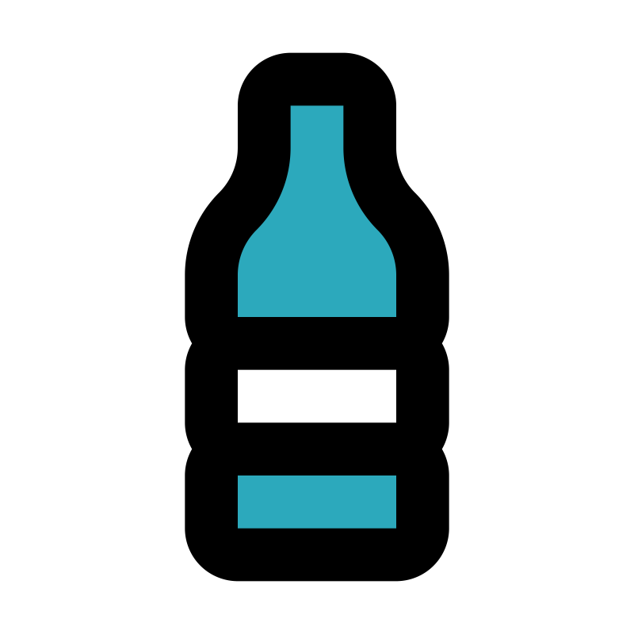
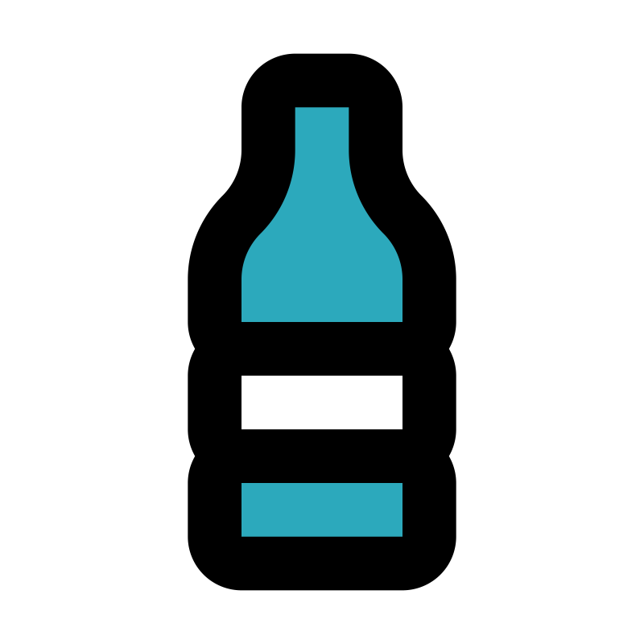

Life below water
Oceans cover three-quarters of our planet, forming the largest ecosystem on Earth. Vital for our survival, they regulate climate, produce oxygen, and provide sustenance to millions worldwide. Unfortunaly our plastic waste destroys the life in the ocean.
Plastic waste
Every year, between 8 million to 12 million tons of plastic end up in the oceans. This represents a major threat to marine life and ecosystems, contributing to injury and death for marine animals who ingest or become entangled in plastic debris.

The effects


Millions of tons of plastic, chemicals, and oil spills enter our oceans yearly, harming marine life and entering our food chain. Turtles, seabirds, and fish are just a few species affected by this toxic legacy.
Microplastics
Microplastics, which are small plastic pieces less than five millimeters in length, can come from a variety of sources, including from larger plastic debris that degrades into smaller and smaller pieces. Microplastics have been found in tap water, bottled water, sea salt, and they can enter the human food chain through seafood and other food products.
Make a change
We all have a role in protecting oceans. Reduce plastic use, support conservation groups, and advocate for sustainable policies. Together, we can protect and restore our oceans and make a lasting impact! Read more

 
